Hoşap Kalesi
Van – Başkale yolu üzerinde yer alan bu harika kaleyi görmenizi tavsiye ediyorum.
Hemen yanında Hoşap Çayı akıyor ve eteklerinde tarihi bir köprü yer alıyor.
Kale dik bir kayanın üzerine konumlandırılmıştır. Orta Çağ kalelerini andıran bir yapısı var.
Çok ağır metalden bir kapısı var ve üzerinde kurşun delikleri var.
Kale restore ediliyor, zindan, eğitim alanı, süvari girişi vb çok sayıda bölümü var.
Kalenin büyük kaya üzerindek heybetli duruşu görülmeye değer.
Zamanında büyük kuşatmalar atlatmış ve derebeyliği döneminde çok etkili bir kale olarak kullanılmış.
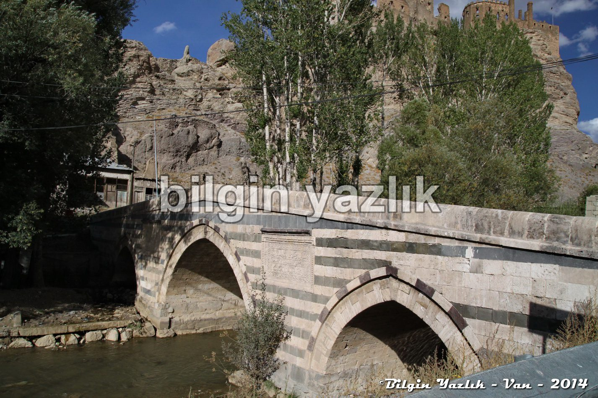
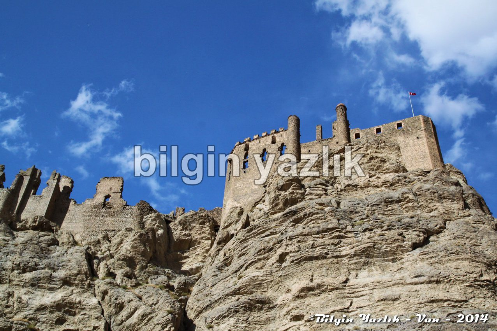
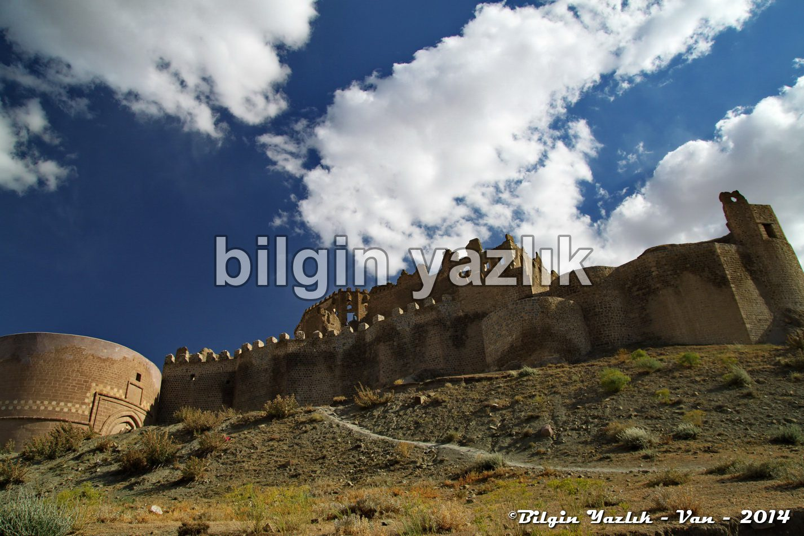
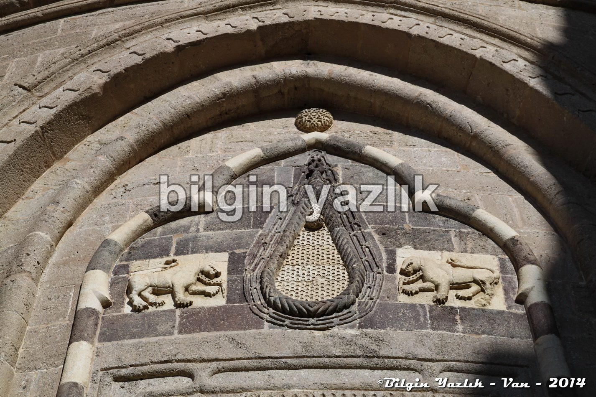
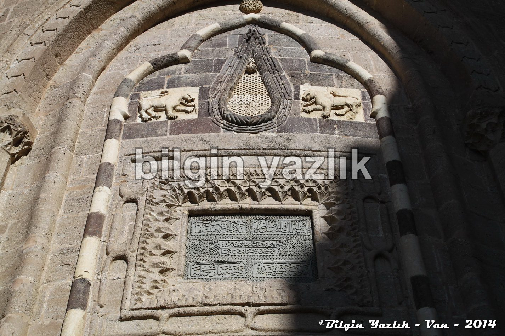
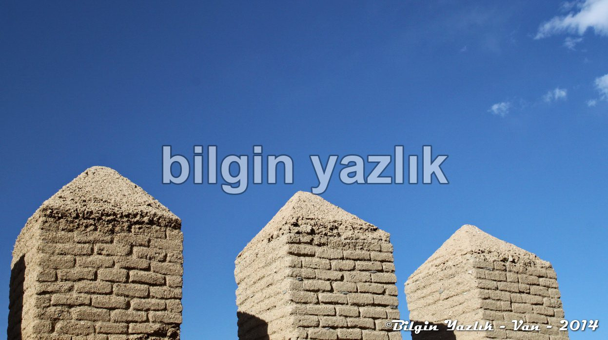
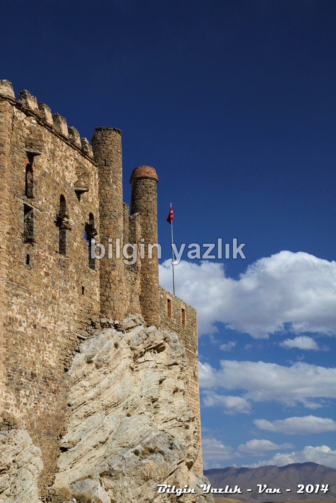
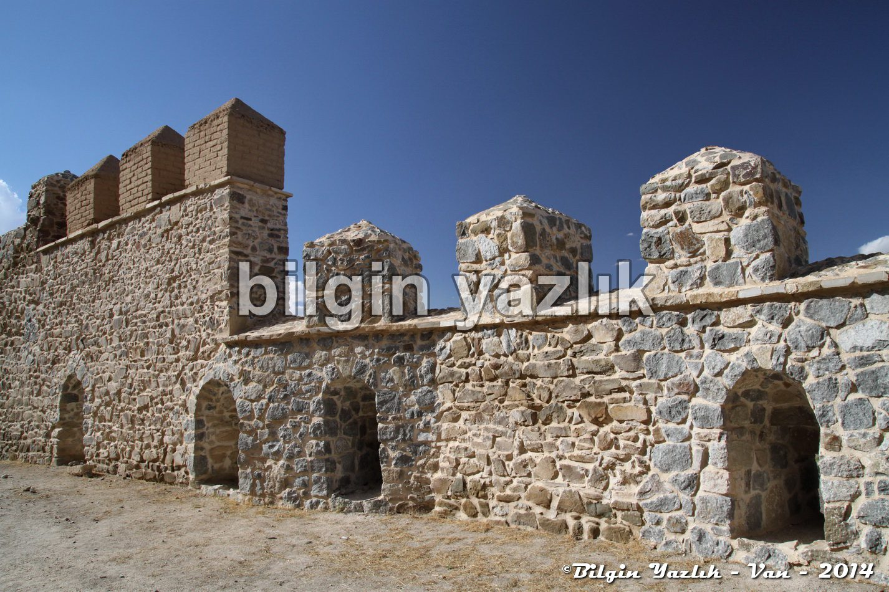
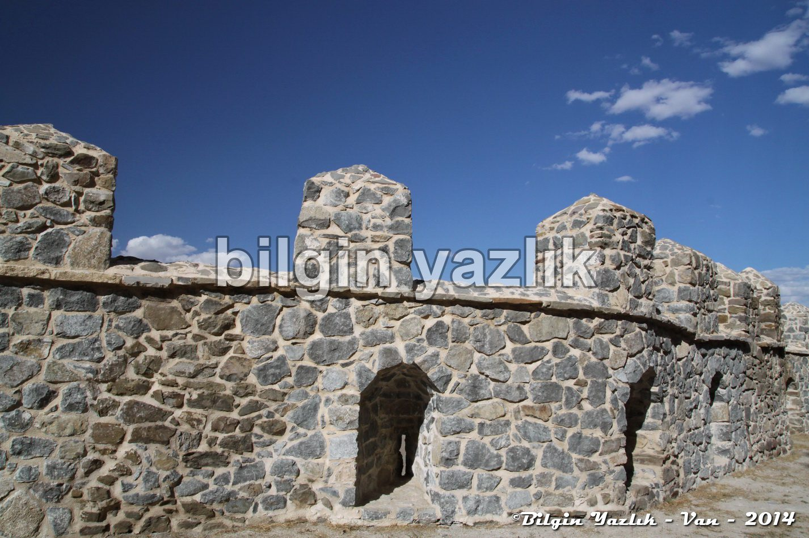
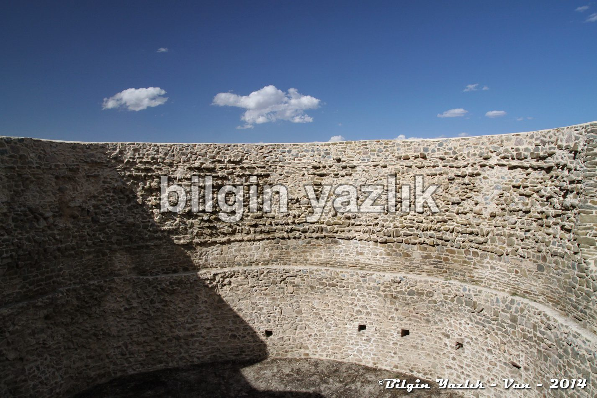
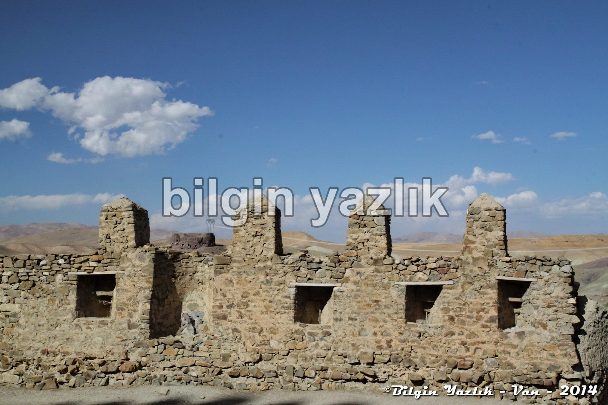
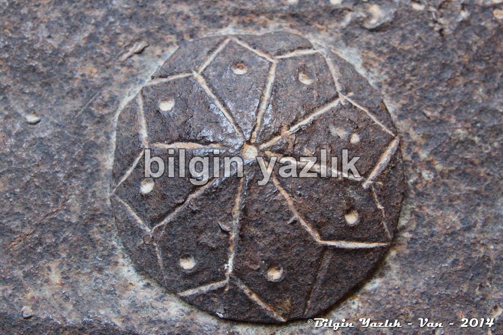
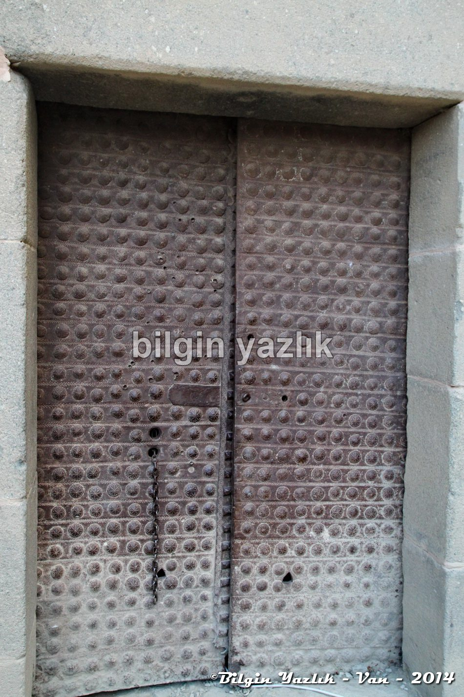
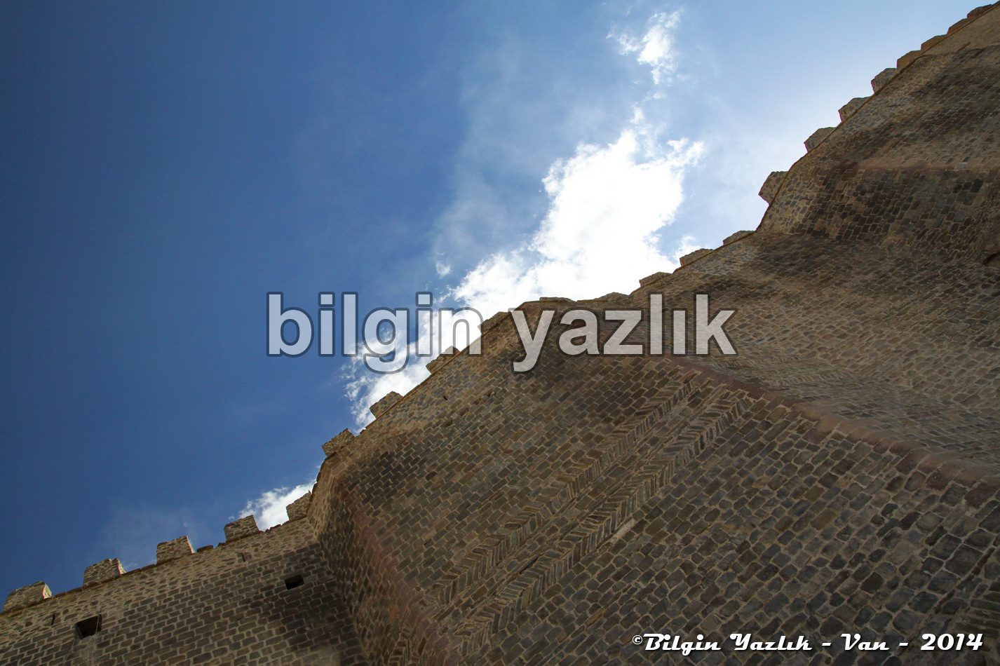
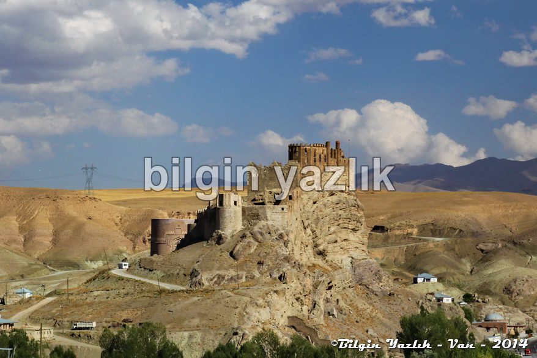
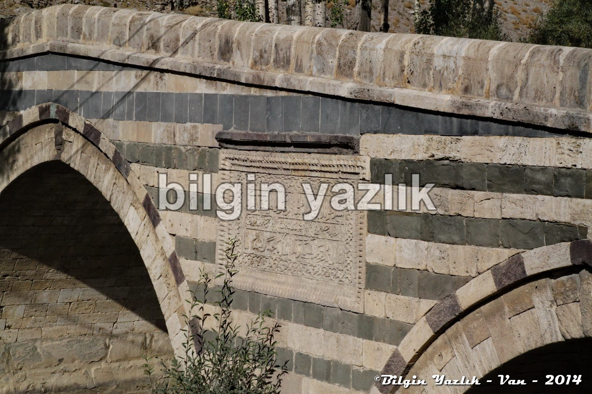
Bu yazı taliyol arşivinden taşınmıştır. · özgün kayıt